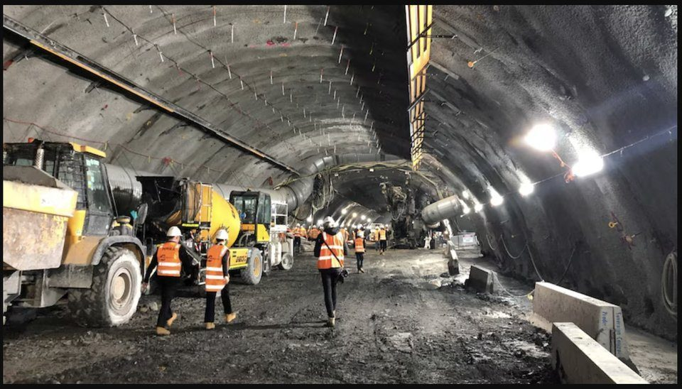
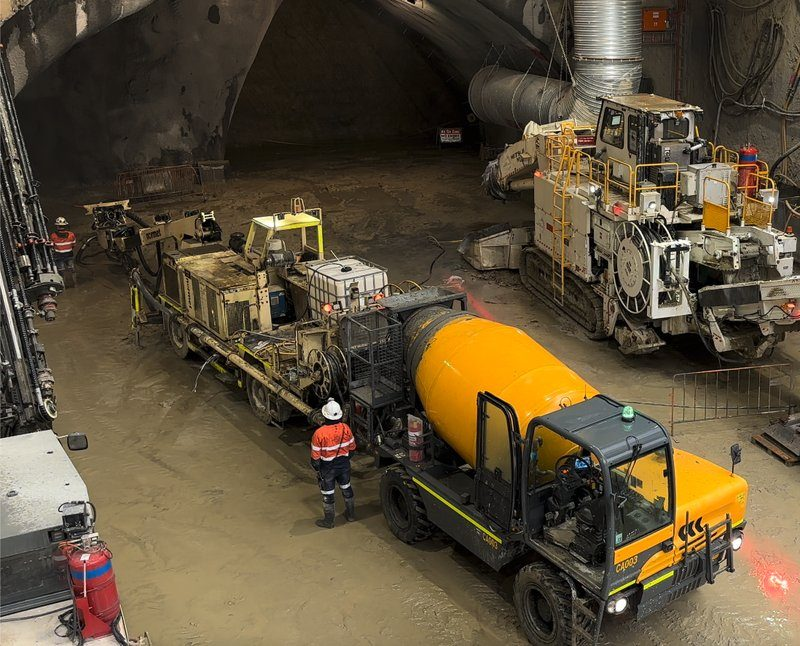
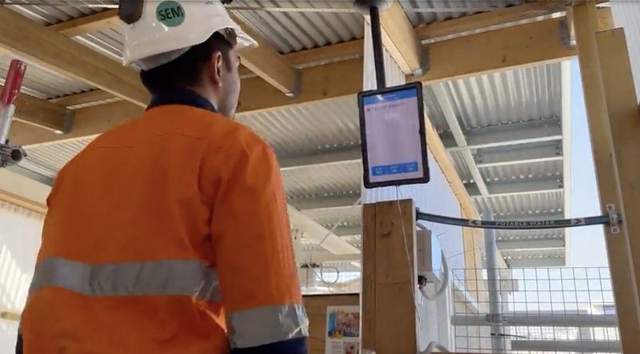
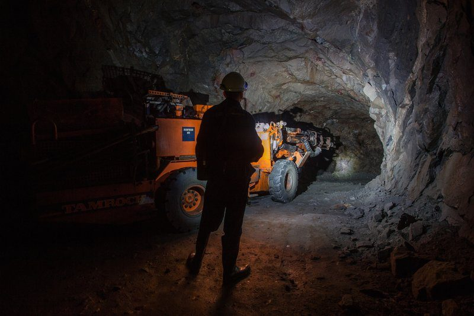
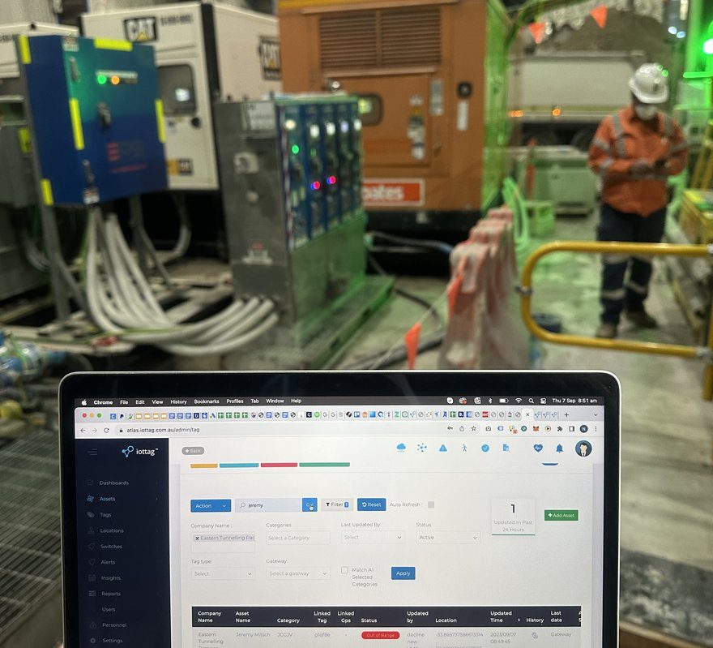
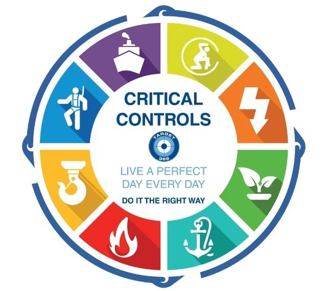

Understanding fatal risk exposure
 June 26
June 26 Solution
Solution
Why The Most Important Safety Risks Are Often Hidden In Plain Sight
Every organisation understands the importance of managing risk.
Risk assessments are completed.
- Critical controls are implemented.
- Procedures are developed.
- Training is delivered.
- Audits are conducted.
- Safety performance is measured.
Yet despite significant investment in safety systems, serious injuries and fatalities continue to occur across industries around the world.
The question is not whether organisations understand risk. The question is whether they understand exposure.

While the terms are often used interchangeably, they are fundamentally different.
Understanding this distinction may be one of the most important developments in the future of operational safety.
Risk And Exposure Are Not The Same Thing
Risk is often defined as the potential for harm.
Exposure describes the degree to which people, equipment or operations are currently interacting with conditions that could lead to harm.
Risk is a possibility.
Exposure is a condition.
This difference is important.
An organisation may identify a fatal hazard within a risk assessment.
However, the level of exposure associated with that hazard may change continuously throughout the day.
The hazard may remain constant.
Exposure rarely does.
This is why understanding exposure provides such valuable insight into operational safety.
Fatal Risks Rarely Appear Suddenly
A collision occurs.
A fall occurs.
A fire occurs.
An uncontrolled release occurs.
An individual is exposed to a hazardous environment.
The event itself may occur in an instant.
The conditions that created the event often develop over time.
This is one of the most important observations emerging from modern safety management.
Serious incidents rarely emerge from a single isolated event.
They typically develop as multiple operational conditions begin aligning.
Individually, these conditions may appear manageable.
Together, they can significantly increase exposure.
Understanding how these conditions interact is critical to understanding fatal risk.
The Invisible Nature Of Exposure
One of the challenges with exposure is that it is often difficult to see.
Traditional safety systems are highly effective at recording events.
What they often struggle to represent is the dynamic interaction between conditions occurring across the operation in real time.

They can record incidents
They can record inspections

They can record hazards

They can record observations
Consider a large infrastructure project.
- Hundreds of workers are active.
- Multiple contractors are operating.
- Vehicles are moving.
- Environmental conditions are changing.
- Equipment is being deployed.
- Permits are being issued.
- Access controls are changing.
At any given moment, exposure may be increasing within one part of the project while decreasing within another.
No single report or dashboard may clearly reveal this.
Exposure exists within the interaction between operational conditions.
Understanding those interactions is often where the greatest safety opportunities exist.
Fatal Risk Is Influenced By Context
A worker operating in a work area is not inherently exposed.
A vehicle operating nearby is not inherently dangerous.
Elevated temperatures may not immediately create risk.
Each condition must be understood within its operational context.
For example:
None of these conditions independently guarantees an incident.
Together they create a very different operational environment.
Fatal risk exposure is influenced not only by individual conditions but by the context in which those conditions occur.
This is why understanding operational context is becoming increasingly important.
Critical Controls Are Necessary But Not Sufficient
Critical controls remain one of the most important components of modern safety systems.
They reduce risk.
They prevent escalation.
They create barriers between hazards and outcomes.
However, critical controls do not eliminate the need to understand exposure.
may technically exist
Yet operational exposure may still be increasing
may remain authorised
Yet environmental conditions may be changing
may remain active
Yet interaction density may be increasing
may remain operational.
Yet airflow may be deteriorating
Understanding exposure helps organisations understand how effectively operational conditions are being managed in practice.
Not just on paper.
Why Exposure Changes Continuously
Traditional risk assessments often provide a static view of risk.
Operations are dynamic.
Every shift introduces change.
As a result, exposure also changes.
The challenge is not identifying risk once.
The challenge is understanding how exposure evolves throughout the day.
This requires a different approach.
One focused on understanding operational conditions as they emerge rather than waiting for outcomes to occur
From Safety Reporting To Exposure Visibility
Historically, organisations have measured safety performance through outcomes.
Injury rates.
Lost time events.
Incident frequencies.
Recordable injuries.
These measures remain valuable.
However, they describe what has already happened.
Fatal Risk Intelligence focuses on what is happening now.
It seeks to understand:
Which conditions are changing.
Where exposure may be increasing.
Which interactions require attention.
What operational areas may be affected.
Where intervention may be valuable.
This creates an opportunity to move from reactive understanding to proactive awareness.

The Role Of Operational Intelligence
Fatal risk exposure cannot be understood through a single system.
It emerges through the interaction of multiple operational domains.
Understanding these interactions requires operational context.
This is where Operational Intelligence becomes increasingly important.
By connecting operational information into a shared operational environment, organisations gain greater visibility into the conditions influencing exposure.
Rather than viewing events independently, they can begin understanding how conditions interact.
This provides a more complete understanding of operational risk.
The Future Of Fatal Risk Management
The future of fatal risk management will not be defined solely by stronger controls.
Or more procedures. Or additional reporting.
Those elements remain important.
However, the organisations achieving the greatest improvements in safety are increasingly focused on understanding exposure.
Understanding how operational conditions interact.
Understanding how exposure develops.
Understanding where intervention may be required.
Because serious incidents rarely emerge without warning.
Exposure exists before the event.
Conditions change before the outcome.

Understanding those conditions earlier creates an opportunity to act.
And in safety, the ability to act before an incident occurs may be the most valuable capability of all.